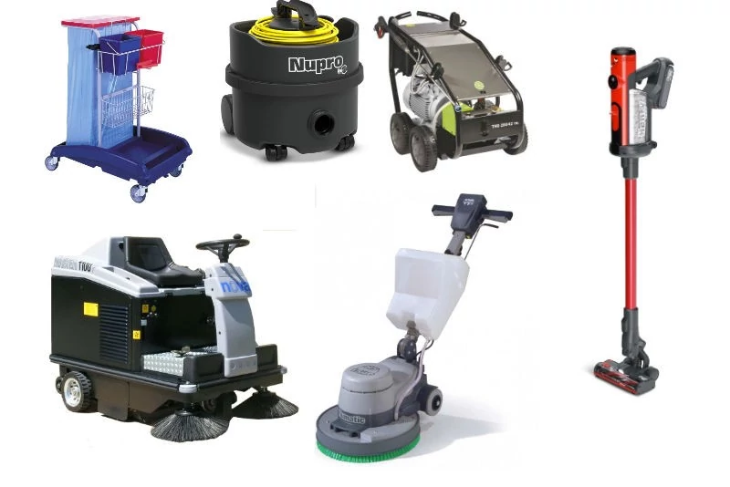

Your Trusted Guide to Building Maintenance
This site provides practical advice on building maintenance, home repairs, and home improvement. The reason we created this platform is to help homeowners gain quick access to the essential knowledge and tools they need to care for their properties. We understand that owning a home comes with both big responsibilities and small, everyday challenges, so our goal is to make reliable guidance available at your fingertips. Whether it’s learning how to prevent costly structural issues, managing seasonal upkeep, or simply fixing those little problems that pop up — like a leaky faucet, a squeaky door, or a cracked tile — we’re here to walk you through it step by step. By combining professional insights with easy‑to‑follow instructions, we aim to empower families to protect the value of their homes, save money on repairs, and enjoy greater peace of mind. In short, this site is designed to be a trusted companion for anyone who wants to keep their living space safe, functional, and welcoming, while also feeling confident in tackling the small fixes that make a big difference.
